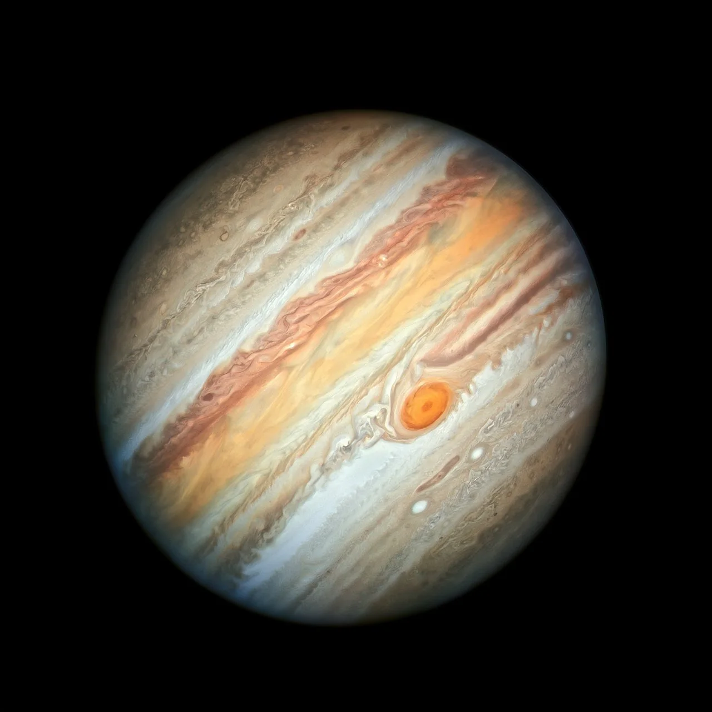

Our Solar System
Jupiter: the measure of giant planets
Jupiter is the largest planet in the Solar System: a gas giant of hydrogen and helium with 11.2 Earth radii and 318 Earth masses. It orbits the Sun in 11.9 years at 5.2 AU. The Great Red Spot is a storm larger than Earth that has persisted for centuries.
Masses of large exoplanets are given in Jupiter masses. Jupiter also lends its name to the “hot Jupiters”: gas giants orbiting so close to their stars that their temperatures reach thousands of degrees. Nothing like them exists in the Solar System. An early example is 51 Pegasi b, announced in 1995: it has 0.46 Jupiter masses and orbits in 4.2 days.
Moons: Jupiter has 115 moons recognized by the International Astronomical Union. The four largest were first observed by Galileo Galilei in 1610: Io has more volcanic activity than any other body in the Solar System; an ocean of liquid water may lie beneath the icy crust of Europa; Ganymede, bigger than Mercury, is the largest of all moons; Callisto is the third largest.
Sources: NASA (NSSDCA): "Planetary Fact Sheet – Metric.", accessed 2026-11-20; NASA (NSSDCA): "Planetary Fact Sheet – Ratio to Earth Values.", accessed 2026-11-20; NASA Science: "Jupiter Facts.", accessed 2026-11-20; NASA Science: "Jupiter Moons.", accessed 2026-11-20; NASA/JPL Solar System Dynamics: "Planetary Satellite Discovery Circumstances.", accessed 2026-11-20; NASA Science: "Gas Giant.", accessed 2026-11-20; NASA Science: "Exoplanets – Planet Types: Overview.", accessed 2026-11-20; NASA Science: "51 Pegasi b" (Exoplanet Catalog)., accessed 2026-11-20